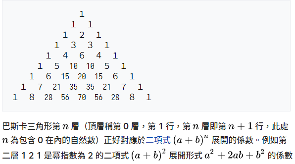

數組:填值/複製/查找/排序、Arrays工具類
尚硅谷JavaSE筆記-07
數組常用算法
數據結構
程序=數據結構+演算法
- 數據間的邏輯關係:集合、一對一、一對多、多對多
- 數據的儲存結構:
- 線性表:順序表(如:數組)、鏈表、棧、隊列
- 樹形結構:二叉樹
- 圖形結構
演算法-Algorithm
-
排序
-
檢索
-
加密
-
…
練習題-帕斯卡三角
形狀不是很漂亮

int[][] arr = new int[10][];
for (int i = 0; i < arr.length; i++) {
arr[i] = new int[i + 1];
// 兩外邊都是1
arr[i][0] = 1;
arr[i][i] = 1;
if (i > 1) {
for (int j = 1; j < arr[i].length - 1; j++) {
arr[i][j] = arr[i - 1][j - 1] + arr[i - 1][j];
}
}
}
for (int i = 0; i < arr.length; i++) {
for (int j = 0; j < arr[i].length; j++) {
System.out.print(arr[i][j] + "\t");
}
System.out.println();
}
題外話-關於行列
台灣教育部規定跟小學老師教的是"直行橫列"，但這個已經不合時宜了
比如說"一行文字"，現代人直覺想到是橫的一行字；程式碼"line幾"我們也說"第幾行"
如果溝通時混淆可以用英文，這有個記憶小訣竅
column，看col中的l就是直的，列。而row，寫w是橫著寫過去，所以是橫的，行
中國、日本都是這樣用，確實比較合理。現在連公文都橫式了，台灣教育部不改革真的失職
難題-螺旋矩陣
這個leetcode中等難度了
int n = 5;
int[][] arr = new int[n][n];
int count = 0; // 填入的數值
int maxX = n - 1; // x軸最大下標
int maxY = n - 1;
int minX = 0; // x軸最小下標
int minY = 0;
while (minX <= maxX) {
for (int x = minX; x <= maxX; x++) { // 左到右
arr[minY][x] = ++count; // y不變，x從0、1、2..直到填滿
}
minY++; // 走到右上角頂了，此時x固定，開始加+Y往下走
for (int y = minY; y <= maxY; y++) { // 右到下
arr[y][maxX] = ++count;
}
maxX--;
for (int x = maxX; x >= minX; x--) { // 下到左
arr[maxY][x] = ++count;
}
maxY--;
for (int y = maxY; y >= minY; y--) { // 左到上
arr[y][minX] = ++count;
}
minX++;
}
// 印
for (int i = 0; i < arr.length; i++) {
for (int j = 0; j < arr[i].length; j++) {
System.out.print(arr[i][j] + "\t");
}
System.out.println();
}
JAVA產生隨機數
Math.random()方法是返回一個0到1之間，前閉後開[)aka含前不含後的double值
(int)(Math.random()*10) // 返回0到9的隨機整數
(int)(Math.random()*n) // 返回0到n-1的隨機整數
(int)(Math.random()*100)+1 // 返回1到100的隨機整數
(int)(Math.random() * (99 - 10 + 1) + 10) // 返回2位正整數[10,99]
(int)(Math.random()*(MAX-min+1)) + min // 返回min到m的隨機整數
數組的淺複製
JAVA中引用類型互相賦值其實是傳遞指針，舉例:
int[] arr1 = {1, 2, 3};
int[] arr2;
arr2 = arr1; // 其實是指到同一個記憶體地址了，畢竟沒有new東西
arr2[0] = 9;
System.out.print("arr2=\t");
for (int j : arr2) { // 順便練習一下foreach遍歷數組
System.out.print(j + "\t");
}
System.out.print("arr1=\t");
for (int j : arr1) {
System.out.print(j + "\t");
}
// arr1跟arr2的[0]都變成9
真正複製數組
new一個然後一一對應賦值，舉例:
int[] arr2 = new int[10];
for (int i = 0; i < arr1.length; i++) {
arr2[i] = arr1[i];
}
數組序列反轉
記得/2，不然又全換回去
for (int i = 0; i < arr.length / 2; i++) {
int tmp = arr[i];
arr[i] = arr[arr.length - i - 1];
arr[arr.length - i - 1] = tmp;
}
// 方法2
for (int i = 0, j = arr.length - 1; i < j; i++, j--) {
int tmp = arr[i];
arr[i] = arr[j];
arr[j] = tmp;
}
數組的查找
比對String是否相同使用.equals()
String[] arr = {"李四", "王五", "劉六", "張三"};
String dest = "張三";
boolean flag = true;
for (int i = 0; i < arr.length; i++) {
if (dest.equals(arr[i])) {
flag = false;
System.out.println("找到對應元素，下標為" + i);
}
}
if (flag) {
System.out.println("查無結果");
}
二分查找
重點在於建立head、middle、end三個下標索引
int[] arr = {1, 20, 22, 41, 52, 53, 67, 75, 80, 99};
int dest = 80;
// 二分查找
int head = 0; // 索引首
int end = arr.length - 1; // 索引尾
boolean flag = true;
while (head <= end) {
int mid = (head + end) / 2; // 這個mid每輪都要更新不能放在while外
if (dest == arr[mid]) {
System.out.println("找到了，下標為" + mid);
flag = false;
break;
} else if (dest < arr[mid]) {
end = mid - 1;
} else {
head = mid + 1;
}
}
if (flag) {
System.out.println("沒找到");
}
排序
衡量排序法優劣的指標
- 時間複雜度:比較的次數、移動的次數
- 空間複查度:所需記憶體
- 穩定性:若序列中A與B的關鍵字值相等，排序後A、B次序保持不變，稱為穩定的
排序分類
- 內部排序:不需要額外的儲存器(如硬碟)，在記憶體中就能完成
- 外部排序:參與的數據量極大，需藉由外部儲存協助完成，常見的有多路歸併排序。可以認為外部排序是多次配部排序組成。
十大經典排序法
https://github.com/hustcc/JS-Sorting-Algorithm
動態圖文講解+各大語言實例，簡直完美
確定性算法的五大特徵
- 輸入:有0或多個輸入數據，必須清楚描述與定義
- 輸出:至少1個輸出結果，不可沒有結果
- 有限性:不可無限循環，且每步驟在可接受的時間內完成
- 明確性:每一步都有明確含意，不可有歧意
- 可行性:每一步都是清楚可行的，能讓用戶紙筆記算求出答案
JAVA冒泡排序(Bubble Sort)
N個元素要進行冒泡排序，最多總共進行
N-1趟排序，第i趟的比較次數為(N-i)次
for (int i = 0; i < arr.length - 1; i++) { // 外圈循環趟數
for (int j = 0; j < arr.length - i - 1; j++) { // 內圈比較次數
if (arr[j] > arr[j + 1]) { // 若前比後大則交換。排完由小到大
int temp = arr[j];
arr[j] = arr[j + 1];
arr[j + 1] = temp;
}
}
}
Arrays工具類的使用
util包提供常用的功能如下，還有很多可以自己探索
Arrays.equals(arr1,arr2)，判斷2數組是否完全相符
Arrays.toString(arr)，將arr完整轉成string，方便印出
Arrays.fill(arr,n)，將n作為元素填滿數組，方便初始化
Arrays.sort(arr)，快速排序
Arrays.binarySearch(arr,dest)，二分查找返回下標或負數(找不到)
生成0到99長度為n的序列並排序
// creat and print array
int n = 10; // arr.length
int[] arr = new int[n];
for (int i = 0; i < arr.length; i++) {
arr[i] = (int) (Math.random() * 100);
}
System.out.println("arr=" + Arrays.toString(arr));
// sort
Arrays.sort(arr);
// print array after sort
System.out.println("arr'=" + Arrays.toString(arr));
數組常見的錯誤
ArrayIndexOutOfBoundsException，下標越界NullPointerException，空指針異常，比如想存取一個引用類型其中某元素但沒賦值的情況
上次修改於 2021-11-22